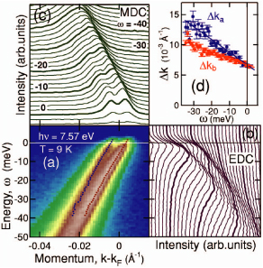

Bi2212 のノード準粒子構造の研究
超伝導状態において金属は電気抵抗ゼロやマイスナー効果などの特異な物性を示す。その発現機構は Bardeen-Cooper-Shrieffer によって提案された BCS 理論により明らかにされた。それは、電子格子相互作用によって二つの電子がクーパー対を形成し、ボーズ凝縮を起こすことによって発現する。銅酸化物高温超伝導体においては電子格子相互作用や磁気的相互作用などが対形成に関与している可能性が議論されているが、まだ解明には至っていない。実験は、角度分解光電子分光 (ARPES) 法を用いた。ARPES 実験は多体相互作用が繰り込まれた準粒子の構造を、エネルギー・波数空間に分解して直接観測でき、準粒子バンドを直接観測することが可能である。これまで、フェルミ面上に開く d 波の超伝導ギャップや、キンク構造などがARPESで観測されている[1,2]。
広島大学放射光科学研究センター (HiSOR) BL-9A において、銅酸化物高温超伝導体 Bi2212 の低エネルギー放射光角度分解光電子分光実験を行った。CuO2二重層間の電子のホッピングに由来する二重層分裂をノード方向において明瞭に観測した。その結果、ノード方向準粒子の散乱確率は超伝導相では常伝導相に比べ約 70 ％ 抑制されることを明らかにした。また、低結合エネルギー領域において反結合バンドの散乱確率が結合バンドの散乱確率より大きくなり、結合バンドが反結合バンドに比べ超伝導に有利な状況にあることが示唆された。
T. Yamasaki et al., Physical Review B 75, 140513(R) (2007)

(a) Bi2212 の Node 方向の準粒子分散 (b) エネルギー分布曲線
(c) 運動量分布曲線 (d) 結合と反結合バンドの散乱確率
(a) Bi2212 の Node 方向の準粒子分散 (b) エネルギー分布曲線
(c) 運動量分布曲線 (d) 結合と反結合バンドの散乱確率
参考文献
[1] H. Ding et al., Phys. Rev. Let. 76 1533 (1996)
[2] P. D. Johnson et al., Phys. Rev. Let. 87 177007 (2001)